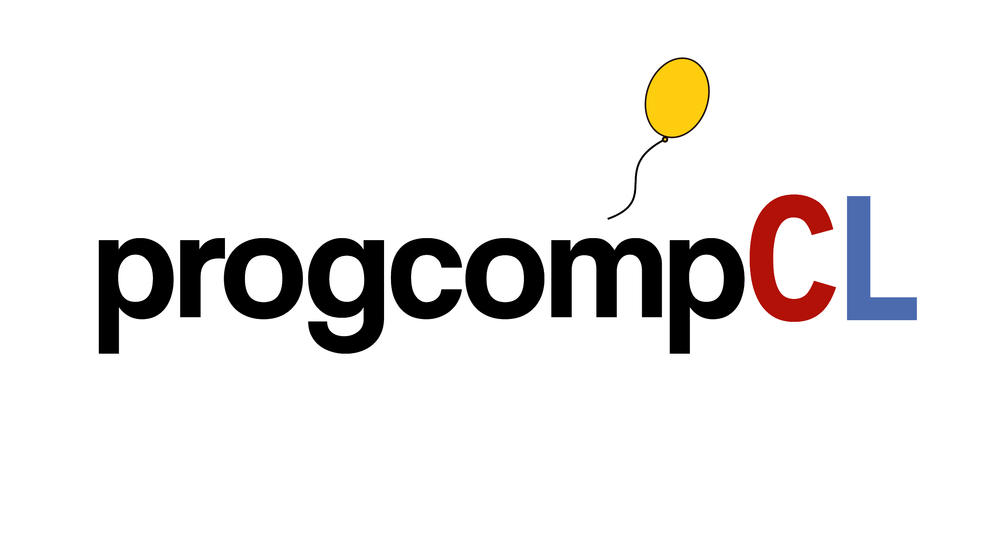

Abrimos las inscripciones para la fase pre-regional de la OCIA
Inscripción gratuita para estudiantes de 7° básico a 4° medio, hasta el 3 de enero de 2027. La fase pre-regional se realizará online el 9 de enero de 2027.
Leer noticiaCICLO 2026–2027
Fase nacional de la Olimpiada Internacional de Inteligencia Artificial. Información sobre la convocatoria, el proceso de selección y los recursos de preparación para representar a Chile en la olimpiada internacional.
Una forma de decidir si un punto nuevo pertenece al grupo A o al grupo B es mirar sus tres vecinos más cercanos y elegir el grupo que más se repite entre ellos.
Esta demo necesita JavaScript para clasificar el punto.

La inscripción es gratuita para estudiantes de 7° básico a 4° medio.
Este es un resumen. Para consultar las bases en detalle, revisa el archivo de las bases.
Para otras consultas, escríbenos a ocia@progcomp.cl
Es la Olimpiada Chilena de Inteligencia Artificial, una competencia de resolución de problemas con análisis de datos, matemáticas y programación. Incluye fases pre-regional, regional y nacional para seleccionar a la delegación que representará a Chile en la olimpiada internacional.
Puedes comenzar con los materiales introductorios para la fase regional. No necesitas experiencia previa para seguir la serie. Consulta el temario para orientar tu preparación.
Ver materialesEncontrarás el formulario de inscripción, las fechas y las bases en la sección Convocatoria.
Ver convocatoriaPueden participar estudiantes de 7° básico a 4° medio.
No. La inscripción a la OCIA es gratuita.
Anuncios y resultados de cada etapa de la olimpiada.
Inscripción gratuita para estudiantes de 7° básico a 4° medio, hasta el 3 de enero de 2027. La fase pre-regional se realizará online el 9 de enero de 2027.
Leer noticiaCONTACTO OCIA
Escríbenos para consultas sobre participación, selección o preparación.
ocia@progcomp.cl